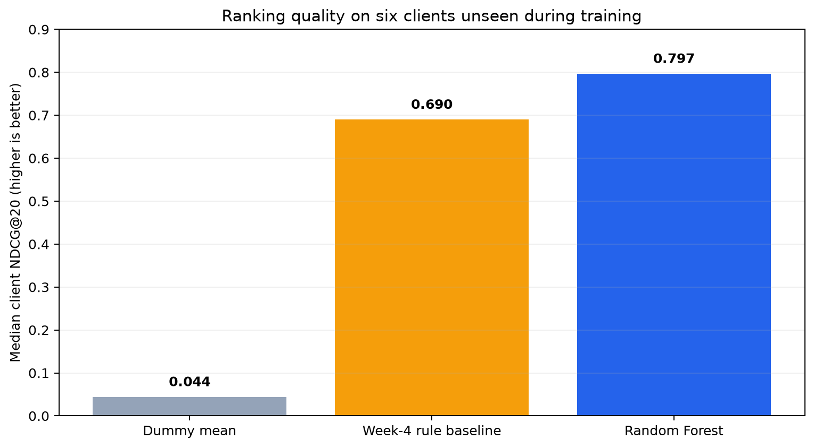
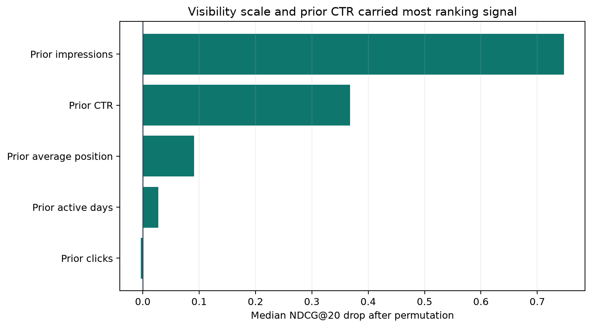
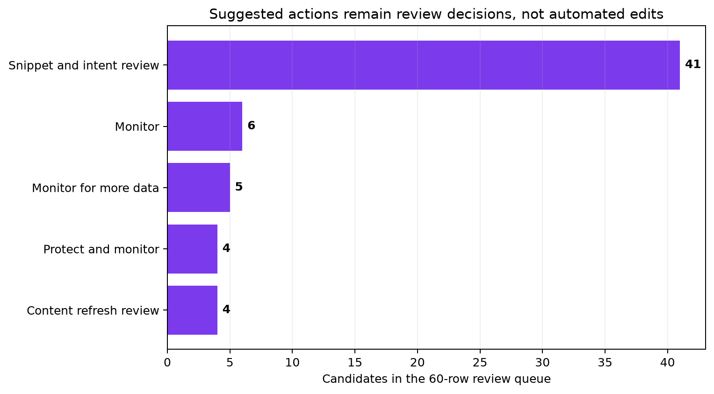

Abstract
A prioritization aid, not an editing autopilot
FlyRank's content-review problem is a scarce-attention problem: when a portfolio contains many pages, strategists need a defensible way to decide what to diagnose first. This study asks whether pre-decision Google Search Console aggregates can rank pages for that manual review, using the March 2026 FlyRank ML Internship release, five features aggregated over March 1–20, and a March 21–31 missed-click opportunity proxy on 86,574 eligible pages. A fixed-seed random forest is compared with a transparent rule and a constant dummy on the same six-client grouped holdout, with no client overlap. The model measured median client NDCG@20 of 0.797, a 15.5% relative gain over the rule baseline's 0.690, while mean precision@20 decreased from 0.917 to 0.850 and the six-client bootstrap interval remained wide. The output is therefore a human-reviewed prioritization queue, not an automatic editing system or a claim of causal traffic lift.
01 · Introduction
The decision: what deserves scarce review time?
FlyRank's operational content problem is deciding where to spend limited diagnostic time across a large portfolio. At a March 20 decision point, can five observable search-performance aggregates rank page-level future missed-click opportunity better than a transparent review rule for clients unseen during training?
A content strategist needs a defensible first-look queue. A false positive costs review time and can invite an unnecessary edit; a false negative delays inspection of a potentially valuable page. The system returns a within-client rank and suggested review action, with human override on every row.
02 · Data
Strict time windows and a public-safe feature boundary
Included
The approved March 2026 `fact_content_daily_performance` partition. Features aggregate March 1–20 impressions, clicks, impression-weighted position, active days, and CTR. Rows require GSC availability, 100 prior impressions, an observed outcome-window impression, and a client with at least 100 eligible pages.
Deliberately excluded
June 2026 remained sealed. Future-window fields, client/content hashes, product-derived trend fields, GA4 fields, URLs, titles, and raw queries never enter model features or the public page. Eligibility excludes disappearing and very low-volume pages.
03 · Methodology
Same pages, same split, three ranking methods
Define the proxy
Future impressions × the positive future CTR gap against training-client peers in the same position band. It is observed opportunity, not incremental clicks.
Freeze the split
A seeded 75/25 group split yields 16 training and six unseen test clients—10,253 held-out pages and zero client overlap.
Compare honestly
Constant dummy, transparent rule, and 200-tree random forest are evaluated on the identical holdout using median client NDCG@20, precision@20, and MAE.
Leakage test: adding forbidden future fields drove an invalid NDCG@20 of 1.000. Those fields were rejected; every retained feature was knowable by March 20.
04 · Results
Better ordering, but not better on every metric

| Method | Median client NDCG@20 ↑ | Mean precision@20 ↑ | MAE ↓ |
|---|---|---|---|
| Dummy mean | 0.044 | 0.683 | 1.237 |
| Rule baseline | 0.690 | 0.917 | 0.486 |
| Random forest | 0.797 | 0.850 | 0.430 |
Interpretation. Against a held-out positive-target base rate of 0.626, the model ordered opportunity magnitude better and reduced score error, while the stricter rule put more binary-positive pages in its top 20. The model's bootstrap 95% interval for median client NDCG@20 was 0.405–0.876, wide enough to require caution.

05 · Limitations & honest framing
What this study cannot claim
Not causal
The proxy does not show that editing a page produces traffic. No intervention or control design was used.
One short period
One March month and six held-out clients cannot establish seasonal or cross-market stability.
Survivorship
Activity in both windows is required, excluding disappearing and low-volume pages.
Missing context
Intent, SERP features, CMS freshness, content quality, conversions, and intervention history are absent.
06 · Ranked recommendations
A 60-row queue with 100% human review

- Inspect page-one under-capture first.Check actual queries, intent and SERP context before considering title or snippet changes.
- Verify refresh need.For striking-distance pages, inspect CMS dates, stale facts, coverage gaps and internal links; never refresh by age alone.
- Protect strong assets.Monitor top-three pages and avoid unnecessary changes without stronger evidence.
- Wait when evidence is thin.Defer action on short histories and define a 30/60-day measurement plan for approved changes.
No-go automation: no automatic publishing, rewriting, deletion, redirect, de-indexing, retraining, causal uplift claim, or action on high-risk content.
07 · Reproducibility
Every public number has a receipt
Randomized steps use seed 42. Committed JSON receipts preserve the comparisons, uncertainty audit, and playbook summary; the capstone notebook regenerates the three aggregate figures.
08 · References & design basis
Research and publishing guidance consulted
- Scientific Reports submission guidelines — concise abstract, reproducible methods, clear figure legends.
- Machine Learning Reproducibility Checklist — assumptions, splits, exclusions, dependencies, and variation.
- GitHub Pages documentation — branch-based publishing from `/docs`.
- Accessible responsive design — semantic structure, readable scaling, and multi-device layout.
09 · Acknowledgments & data credit
Built on the FlyRank ML Internship dataset
FlyRank provided the anonymized learning release and internship framework. This analysis is an independent internship project. No private client data or row-level identifiers are published.